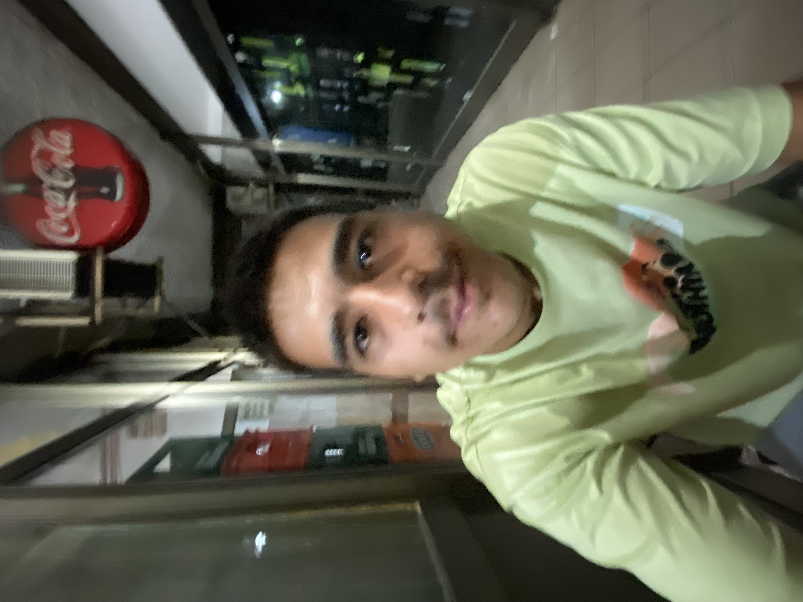
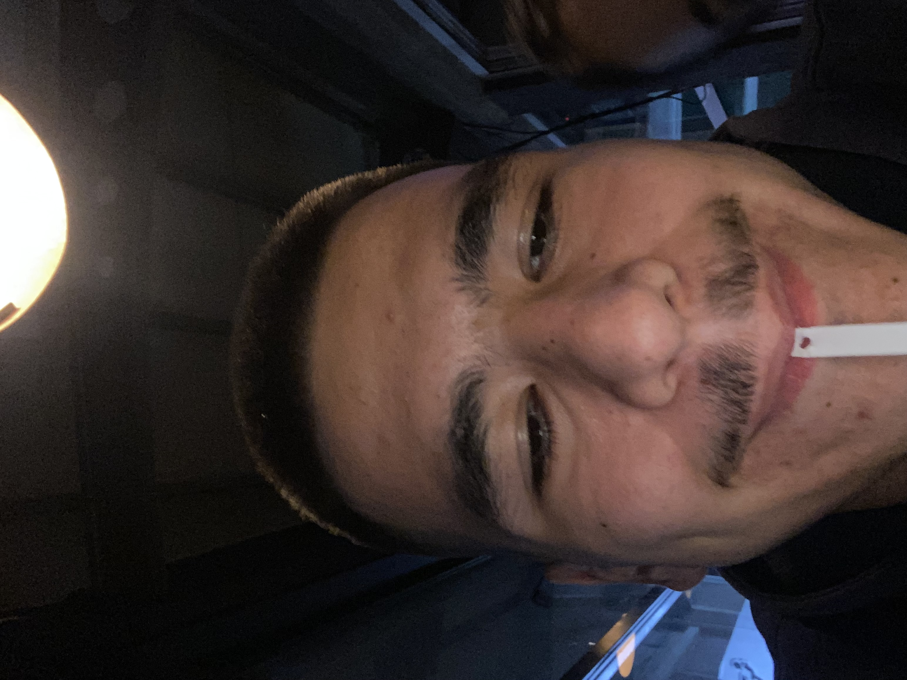
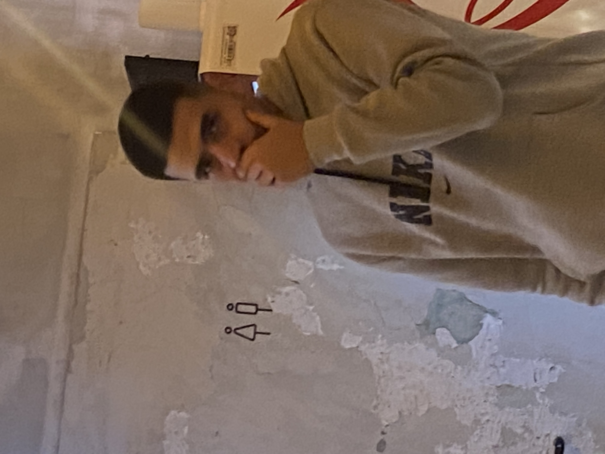
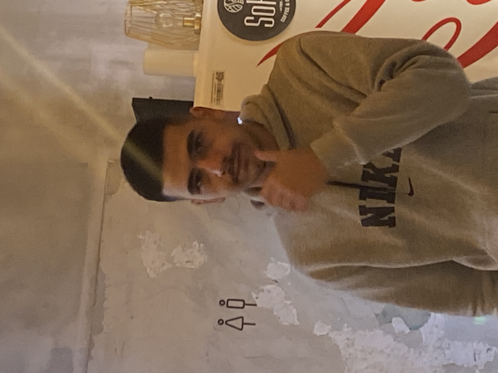
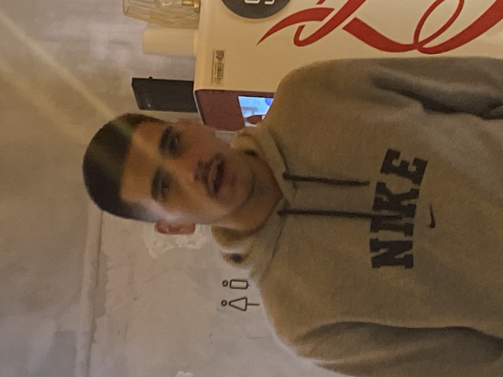

повеќе отколку што можам да објаснам ♡

Те сакам оти со тебе никогаш не морав да се преправам дека сум нешто шо не сум. Ме знајш каква сум, и добра и лоша, и нервозна и тврдоглава, со сите мои мани, а сепак толку долго беше покрај мене. Со тебе можам да бидам баш јас.

Те сакам оти ти си единствениот човек со кој можам да зборам за буквално сѐ. И за најглупите работи и за најтешките. Ми фали то шо можев да ти кажам сѐ шо ми лежи на душа и само од еден разговор со тебе да ми биди полесно.

Те сакам оти покрај тебе ги имам најубајте спомени. Не мораше ни да прајме нешто посебно, доволно ми беше само да сме заедно. Некои моменти можи за друг да се ништо, ама за мене ќе останат засекогаш нешто шо не сакам да го заборам.

Те сакам оти колку и да помини време, пак тебе те гледам во работите шо ги замислувам за понатака. Сакам уште милион работи да пробам, да видам и да доживеам, ама најмногу сакам еден ден да можам да речам дека сето то сум го доживеала со тебе.

А најмногу те сакам оти си ти. Не заради една работа, не заради еден момент и не заради нешто шо си напрајл за мене. Те сакам цел, со сѐ твое. И после сѐ, кога ќе се прашам кој човек сакам да го имам до мене, одговорот пак ми иди ист — тебе. ♡